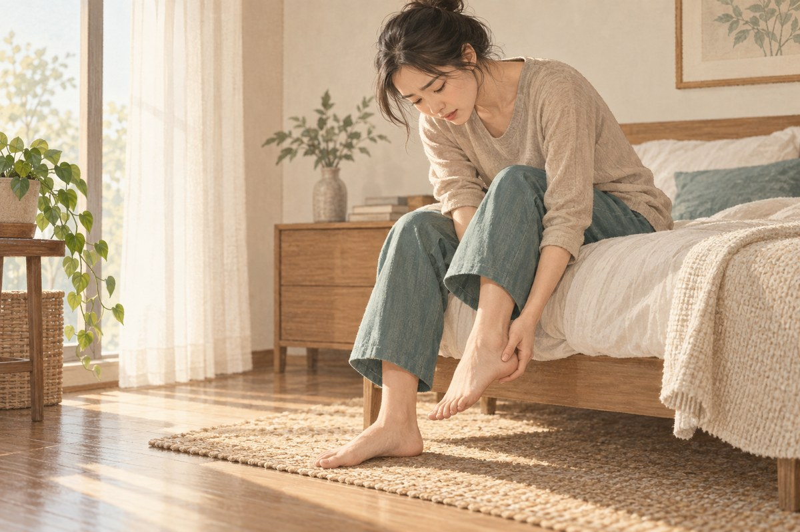
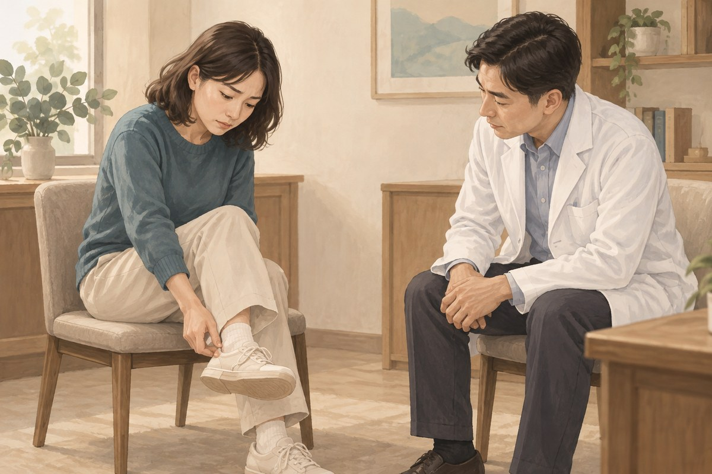
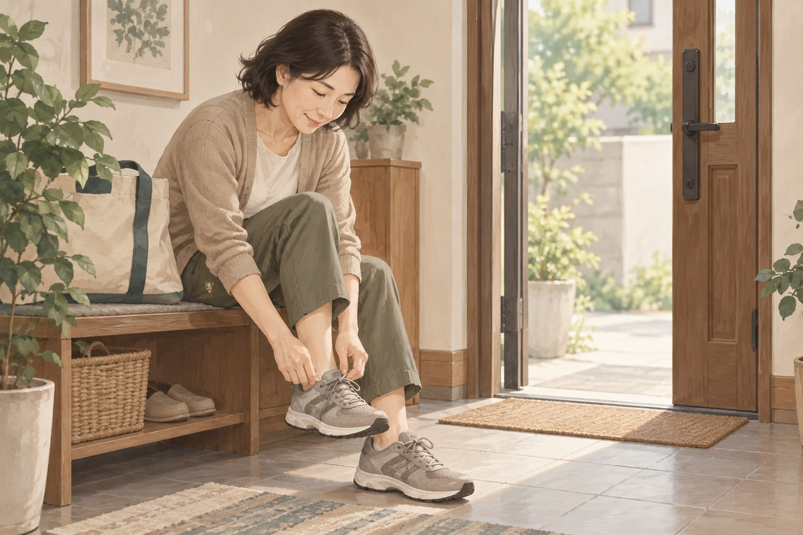

足底痛
足底痛最常見在腳跟或足弓，可能在早上下床第一步、久坐後起身或長時間站走時特別明顯。足底筋膜是常見來源之一，但跟腱、神經、脂肪墊、關節炎與壓力性骨折也可能造成足跟痛。
你是否有這些困擾？
- 早上下床第一步腳跟刺痛
- 久坐後起身走路時足底特別痛
- 久站、走遠路或跑步後加重
- 足弓緊繃，小腿與跟腱也很緊
- 換鞋、增加運動量或體重變化後出現
- 疼痛持續，開始改變走路姿勢

足底痛可能來自哪些位置？
足底筋膜連接腳跟與腳趾，支撐足弓。當負荷超過組織適應能力時，腳跟內側與足弓可能疼痛。疼痛常在休息後重新踩地時最明顯。
足跟骨刺不一定是疼痛原因。跟腱、神經、脂肪墊與壓力性骨折也會造成足跟痛，需要依痛點與活動型態區分。
常見表現
起床第一步痛
睡眠或久坐後第一次踩地時最痛，走幾步後可能稍微緩解，但久站或活動後又加重。
足跟內側或足弓壓痛
痛點常位於腳跟底部靠內側，也可能沿足弓延伸。按壓與腳趾背伸時可能誘發。
活動後疼痛
跑步、跳躍、長時間站走或訓練量增加後加重。若單點骨頭壓痛、夜間痛或無法承重，需排除骨折。
常見相關因素
- 跑步、跳躍與長時間站立
- 短時間增加步數、速度或訓練量
- 小腿與跟腱緊繃
- 扁平足、高足弓與足部控制
- 鞋底太薄、支撐不足或鞋具突然改變
- 體重快速增加
- 跟腱、神經或壓力性骨折造成相似疼痛
哪些人需要更完整評估？
足底痛持續、影響走路，或反覆治療仍未改善時，應接受評估。糖尿病、感覺異常、循環問題、骨質疏鬆或近期快速增加運動量者，也需要更仔細檢查。
可以先觀察什麼？
記錄最痛位置、第一步痛、站走與運動後的變化，以及近期鞋具、步數、跑量與體重變化。觀察是否有麻木、灼熱、腫脹或單點骨頭壓痛。
什麼情況需要盡快就醫？
若外傷後無法承重、腳部變形、明顯腫脹或瘀青，應儘快就醫。足部紅腫熱痛合併發燒、傷口，或出現持續麻木、冰冷與顏色改變，也需要立即評估。
連邦中醫如何評估足底痛？
醫師會了解疼痛位置、第一步痛、站走與運動負荷，再檢查足底壓痛、足弓、踝關節、小腿與跟腱活動。也會觀察步態與鞋具，排除神經、骨折與其他足跟問題。

針灸傷科診療方向
中醫可從足跟痛、痹證與筋傷等方向辨證，並結合足底筋膜、跟腱與下肢功能評估。
氣滯血瘀
疼痛固定、踩地或按壓明顯，常和負荷增加有關。治療著重行氣活血、舒筋通絡。
寒濕阻絡
足底冷痛、沉重，遇冷或潮濕時加重。治療以散寒除濕、通絡止痛為主。
肝腎不足
足跟痛反覆日久，伴隨腿部痠軟與恢復較慢。治療會依整體表現評估補益肝腎、濡養筋骨。
連邦中醫的治療方式
一般針灸與不留針
依痛點、足踝活動與小腿張力安排，治療後比較第一步痛與走路功能。
浮針與針刀
需先確認足底筋膜、跟腱或其他組織來源與解剖風險，再判斷適用方式。
針灸整合物理治療
可搭配足踝活動、小腿與足底肌力、步態及鞋具調整，逐步恢復站走與運動負荷。
日常照護
- 暫時降低會明顯加重疼痛的跑跳與久站量
- 起床前先溫和活動腳踝與足底
- 依狀況進行小腿、跟腱與足底伸展
- 選擇合腳並有適當緩衝與支撐的鞋
- 不赤腳長時間走在硬地
- 症狀穩定後逐步增加步數與訓練量

常見問題
足底痛可以用中醫治療嗎？
可以由醫師評估。針灸與傷科治療可依痛點、足踝活動、站走負荷及中醫證型安排。
有骨刺就是骨刺在痛嗎？
不一定。影像上的骨刺在沒有疼痛的人也可能出現，仍要依壓痛位置、活動與組織檢查判斷。
第一走越痛越要踩開嗎？
不建議強迫踩到劇痛。可先溫和活動，再依疼痛反應逐步增加承重。
鞋墊一定有效嗎？
鞋墊可能協助部分人調整壓力，但需要配合鞋具、活動與足踝功能，並非所有人都需要訂製。
可以直接做針刀嗎？
需要先確認疼痛來源與解剖位置，再由醫師評估是否適合。
🏥 讓專業團隊成為您的健康後盾
就診時可說明疼痛位置、持續時間、誘發動作、外傷史及麻木或無力的情況，並攜帶目前用藥及檢查資料。
105 臺北市松山區南京東路四段69號1樓